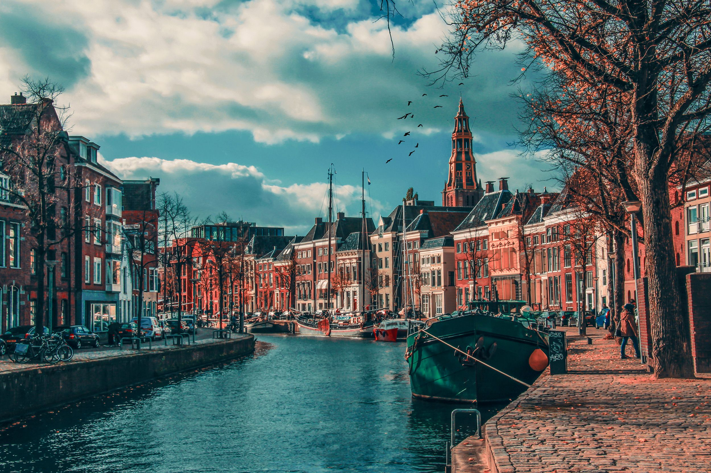

PWS
Aardbevingsbestendig bouwen
Home
Onderzoek
Artikelen
Support
Interactie
Contact

Terug naar support
Bijlagen
Rekenregels en voorschriften voor de bouw (betonline)
Onderzoeksverslag duurzaam wonen
Bouwrichtlijnen voor aardbevingsbestendig bouwen
Presentatie over aardbevingen
Universitair artikel over aardbevingen
Informatie over houtsterkten
Dataset (simulatie) voor v0.8.3
PWS presentatie
PWS presentatie
PWS
Aardbevingsbestendig bouwen
Iets niet kunnen vinden, vragen of opmerkingen? Neem een kijkje op onze contact pagina's
Contact pagina
Helpcentrum
Email
PWS
2023 - 2024
© Copyright by
vqnderklein.nl
.
All rights reserved.